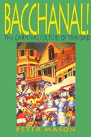

<body bgcolor="#FFFFFF" text="#000000" link="#0000FF" vlink="#CC0000" alink="#CC0000"><center><hr width="350" size="1" align="center" noshade>How carnival expresses and celebrates Trinidadian culture<hr width="350" size="1" align="center" noshade><p><a href="https://cdcshoppingcart.uchicago.edu/Cart/ChicagoBook.aspx?ISBN=9781566396622&&PRESS=temple" target="_top">Buy this book!</a> | <a href="https://cdcshoppingcart.uchicago.edu/Cart/Cart.aspx?PRESS=temple" target="_top">View Cart</a> | <a href="https://cdcshoppingcart.uchicago.edu/Cart/Cart.aspx?PRESS=temple" target="_top">Check Out</a></p><p></p></center><!--none//--><h1>Bacchanal!</h1>
<H2>The Carnival Culture of Trinidad</H2>
<h3>Peter Mason</h3>
<P>cloth 1-56639-662-X $70.50, Feb 99, <FONT COLOR=#990033>Available</FONT>
<br>paper 1-56639-663-8 $28.95, Dec 98, <FONT COLOR=#990033>Out of Stock Unavailable</FONT>
<BR> 192 pp
6x9
<BR>&nbsp;<br>Restricted: U.S. only (USA)
</P><BLOCKQUOTE><I>"Peter Mason's book is long overdue and most welcome. For me, the steel pan innovations, coupled with the author's historical input in this context, are paramount, because both are undervalued and need serious recognition."</I>
<br>&#151<b>Alex Pascall</b>, OBE, Broadcaster, Historian, Consultant on Caribbean Affairs<I></I></BLOCKQUOTE>
<p>On the days preceding Ash Wednesday, Trinidad erupts in an orgy of excitement, noise, color, and energy known as carnival. Other countries celebrate carnival, but none quite like Trinidad, where carnival is not just a two-day event; it is an all-year-round statement of identity. Up to 100,000 Trinidadians, or almost 10 percent of the population, actively take part in carnival. Everyone talks and argues about it, some boycott it, but no one ignores it. Calypsonian SuperBlue has called it "one of the most awesome moods in the world." Trinidadians have a word to describe it: "Bacchanal!"
<p>In this vivid and exuberant book, journalist Peter Mason looks at the past, present, and future of carnival, using not just personal observations and printed sources but also interviews with a wide variety of participants, including performers, pan tuners, designers, and stick fighters. Mason examines the three essential elements of Trinidadian carnival&#151steelband, calypso, and masquerade. He also discusses recent developments like the growing influence of women and the effects of commercialism. As Mason demonstrates, carnival brings together nearly all aspects of Trinidad's cultural identity&#151religion, music, language, humor, folk traditions, politics, gender roles, ethnic traditions, even food and sport. It also has an influence, outside the country, on how people view the island and as an export in itself. Mason weaves all these facets of carnival together to create a vibrant sense of the phenomenon itself&#151its wit and its vulgarity, its sumptuous colors and heart-pounding noise, its competitiveness and spontaneity, the months of hard work to produce two days of exuberant self-abandonment&#151all the complex energies that lead to "Bacchanal!"
<p>Companion CD available
<BR>&nbsp;<h2>Contents</h2><P>
<p>Acknowledgements
<br>Introduction
<p>1. Kaiso!
<br><I>Roots of Calypso &#149
The Social Dimension &#149
Soca &#149
TheCarnival Tents &#149
The Road to the Crown &#149
The Savannah &#149
Competitive Edge &#149
The Road March &#149
'But Dey Forget Calypso' &#149
The International Stage &#149
Chutney Soca </I>
<p>2. Steel Pan
<br><I>From Bamboo to Oil Drum &#149
'Behind the Bridge' &#149
The Modern Steelband &#149
Panorama &#149
The Lime &#149
Pan Competition &#149
Bands and Arrangers &#149
Pan and the Community </I>
<p>3. Playing Mas
<br><I>Costume Design &#149
Kings and Queens &#149
J'Ouvert Morning &#149
Carnival Monday &#149
Carnival Tuesday &#149
Sexual Energy &#149
The Decline of Ole Mas &#149
The Future of Mas </I>
<p>4. Don't Stop the Carnival!
<br><I>Organisation &#149
Tourism &#149
Sex and Violence &#149
Carnival Controversy</I>
<p>5. Woman is Boss
<br><I>Women and Calypso &#149
Calypso Queens &#149
Women and Pan </I>
<p>6. Past and Future
<br><I>Stickfighting &#149
Influences andEvolution &#149
The Indian Influence &#149
Exporting Carnival &#149
The Balance of Payments &#149
Into the Future &#149 </I>
<p>Notes
<br>Bibliography
<br>Discography
</P><BR>&nbsp;<H2>About the Author(s)</H2>
<P><B>Peter Mason</B></A>, a freelance journalist and writer, has written widely in the <I>Guardian, Independent,</I> and <I>Observer</I> newspapers in London. He is a regular visitor to Trinidad and is currently at the University of the West Indies, Jamaica.</P>
<BR><H2>Subject Categories</H2>
<p><A HREF="/tempress/latin.html" TARGET="_top">Latin American/Caribbean Studies</a>
<BR><A HREF="/tempress/music.html" TARGET="_top">Music and Dance</a>
<BR><A HREF="/tempress/sociology.html" TARGET="_top">Sociology</a>
</p>
<p align="center"><a href="https://cdcshoppingcart.uchicago.edu/Cart/ChicagoBook.aspx?ISBN=9781566396622&&PRESS=temple" target="_top">Buy this book!</a> | <a href="https://cdcshoppingcart.uchicago.edu/Cart/Cart.aspx?PRESS=temple" target="_top">View Cart</a> | <a href="https://cdcshoppingcart.uchicago.edu/Cart/Cart.aspx?PRESS=temple" target="_top">Check Out</a></p><p><font face="Arial" size="1"><a href="copyright.html" onMouseOver="window.status='Web Copyright Policy';return true;" onMouseOut="window.status=''" title="Web Copyright Policy">&copy;</a> 2015 <a href="http://www.temple.edu" target="new" onMouseOver="window.status='Link to Temple University home page';return true;" onMouseOut="window.status=''" title="Link to Temple University home page">Temple University</a>. All Rights Reserved. http://www.temple.edu/tempress/titles/mason_reg.html</font></p>